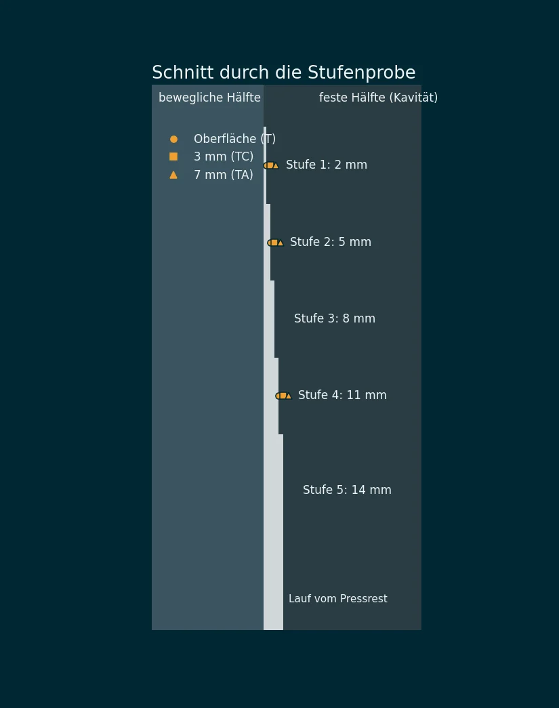
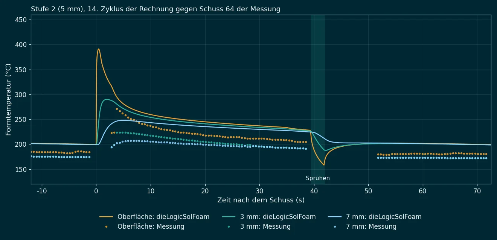
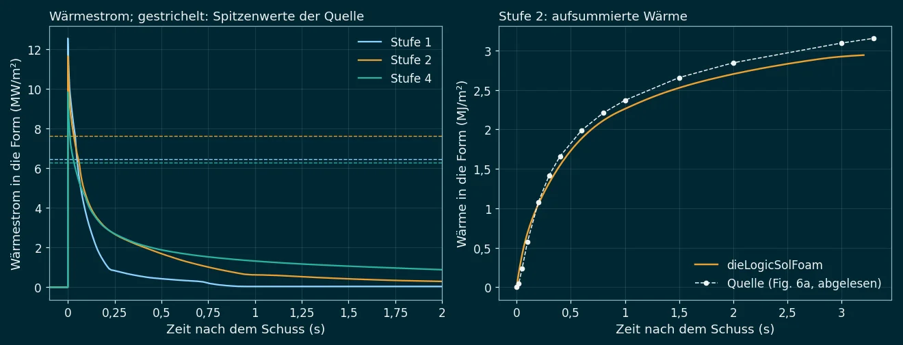

Die erste Prüfung von dieLogicSolFoam an einer Messung im Druckguss:
eine Stufenprobe aus AM50 mit Thermoelementen in der Form. Die Wärme, die das Gussteil in den ersten
Sekunden an die Form abgibt, trifft die Auswertung der Quelle auf 7 %. Die Temperaturen 3 und 7 mm tief in
der Form steigen in der Rechnung dagegen 1,5- bis 1,8-mal so stark wie gemessen. Das liegt nach einer
einfachen Abschätzung nicht am Modell: mit der gemessenen Wärme muss Warmarbeitsstahl in 7 mm Tiefe um bis
zu 56 K wärmer werden, gemessen sind 32 K.
1. Der Versuch
Guo, Xiong, Cho und Choi (Tsinghua-Universität, 2008) haben auf einer 650-t-Kaltkammermaschine eine Stufenprobe gegossen: 125 mm breit, fünf Stufen von 2, 5, 8, 11 und 14 mm Dicke, 55 bis 80 mm hoch, aus der Magnesiumlegierung AM50 in einem Einsatz aus H13. Die Kavität ist in die feste Formhälfte eingearbeitet, die bewegliche ist eben. Hinter den Stufen 1, 2 und 4 sitzen Thermoelemente in der festen Hälfte: mit der Spitze an der Kavitätenfläche, 3 mm und 7 mm dahinter, abgetastet mit 50 Hz. Gegossen wurde bei 680 °C, 67 MPa Gießdruck und 2 m/s im schnellen Schuss, rund 370 Schüsse.
Aus den Temperaturen hat die Quelle mit einem inversen Verfahren den Wärmestrom und den Wärmeübergangskoeffizienten zwischen Gussteil und Form bestimmt: nach dem Schuss ein Spitzenwert von 24 bis 49 kW/(m² K), der beim Erstarren auf 1 bis 2 kW/(m² K) fällt.
| Größe | Wert | Herkunft |
|---|---|---|
| Geometrie, Messstellen | 5 Stufen, Thermoelemente bei 0, 3 und 7 mm | Fig. 1 und 2 der Quelle |
| Legierung, Form | AM50, 680 °C; H13 | angegeben |
| Zyklus | 72,5 s, Sprühen 39,5 s nach dem Schuss | aus Fig. 4a gemessen |
| Temperaturverläufe Stufe 2 | Oberfläche, 3 mm, 7 mm über Schuss 64 | aus Fig. 4a digitalisiert |
| Oberfläche Stufen 1, 2, 4 | vor dem Schuss und 10 s danach | aus Fig. 4b digitalisiert |
| Wärmestrom | Spitze 6,45 / 7,62 / 6,27 MW/m²; Verlauf Stufe 2 | angegeben; Fig. 6a abgelesen |
| Kühlung der Form, Öffnungszeit | nicht angegeben | angenommen, siehe Abschnitt 3 |
2. Das 2D-Modell
Die Stufen sind 125 mm breit; in ihrer Mitte fließt die Wärme quer durch die Dicke. Gerechnet wird deshalb ein Schnitt durch beide Formhälften und alle fünf Stufen, mit dem Lauf darunter (Fig. 1 und 2 der Quelle). Über das Gussteil und die ersten 30 mm der Form sind die Zellen 0,5 mm breit, die 2-mm-Stufe hat also vier Zellen über der Dicke; zur Rückseite hin werden sie gröber, 21 840 Zellen insgesamt. Die Messstellen der Quelle sind Sonden im Modell an derselben Stelle.
Gerechnet werden 14 Schüsse hintereinander mit Öffnen, Sprühen und Schließen, bis die Form im Zyklusbetrieb ist. Verglichen wird der 14. Schuss der Rechnung mit Schuss 64 der Messung. Eine Rechnung dauert etwa vier Minuten.

3. Was angenommen und was angepasst ist
Der Kontakt zwischen Gussteil und Form beginnt mit 35 kW/(m² K), der Größenordnung der inversen Auswertung der Quelle. Wie die Form gekühlt wird, gibt die Quelle nicht an. Im Modell geben die Rückseiten beider Hälften Wärme an ein Kühlmittel ab. Zwei Werte sind an der Messung angepasst: die Temperatur dieses Kühlmittels und der Kontakt, wenn das Gussteil fest ist und sich ein Luftspalt öffnet. In sechs Rechnungen mit 60 oder 90 °C und 200, 400 oder 700 W/(m² K) passt 60 °C mit 200 W/(m² K) am besten; diese Werte sind die Einstellung des Falls.
Auch damit ist die Form vor dem Schuss zu warm. Kälteres Kühlmittel hilft kaum, denn 100 mm Stahl zwischen Rückseite und Kavität begrenzen die Kühlung. Die echte Form muss Kühlkanäle nahe an der Kavität haben; die Quelle nennt sie nicht.
4. Ergebnis


| Größe | Rechnung | Messung | Bewertung |
|---|---|---|---|
| Wärme in die Form, Stufe 2, erste 3,3 s | 2,94 MJ/m² | 3,15 MJ/m² | trifft (7 %) |
| Reihenfolge der Stufen an der Oberfläche | 1 < 2 < 4 | 1 < 2 < 4 | trifft |
| Oberfläche vor dem Schuss, Stufe 1 | 160 °C | 150 °C | trifft |
| Oberfläche vor dem Schuss, Stufen 2 und 4 | 201 / 281 °C | 184 / 230 °C | zu warm |
| Oberfläche 10 s nach dem Schuss, Stufen 1, 2, 4 | 192 / 260 / 402 °C | 176 / 235 / 331 °C | zu warm |
| Anstieg in 3 mm / 7 mm, Stufe 2 | 90 / 48 K | 49 / 32 K | zu stark |
| Spitzenwärmestrom, Mittel über 20 ms, Stufen 1, 2, 4 | 10,3 / 9,5 / 8,0 MW/m² | 6,45 / 7,62 / 6,27 MW/m² | zu hoch |
5. Warum der Anstieg in der Form nicht passen kann
Geht eine Wärmemenge $Q$ je Fläche in kurzer Zeit in eine dicke Stahlwand, steigt die Temperatur in der Tiefe $x$ höchstens um
Mit der Wärme aus der Auswertung der Quelle, $Q = 3{,}15$ MJ/m², und H13 ($\rho c \approx 3{,}9$ MJ/(m³ K)) sind das in 7 mm Tiefe 56 K. Die Rechnung kommt auf 48 K, weil die Wärme über etwa eine Sekunde verteilt ankommt. Gemessen sind 32 K. Die gemessene Wärme und der gemessene Anstieg passen also untereinander nicht zusammen. Die Quelle musste diesen Anstieg nicht nachbilden, denn sie hat das Thermoelement in 7 mm Tiefe selbst als Randbedingung ihrer Auswertung verwendet.
Am wahrscheinlichsten zeigen die eingebauten Thermoelemente gedämpft und verzögert an: Sie sitzen in Bohrungen, mit Übergangswiderstand im Loch und Wärmeableitung über den Mantel. Dafür spricht auch der Zeitpunkt: in 3 mm Tiefe erreicht die Messung ihr Maximum 5 s nach dem Schuss, die Rechnung nach 2 s. Der Spitzenwärmestrom liegt auch als Mittel über 20 ms (die Abtastung der Messung) über den Werten der Quelle: das Modell setzt den vollen Kontakt vom ersten Augenblick an, das inverse Verfahren verteilt die Spitze über mehrere Messpunkte.
Dieser Fall bestätigt die Wärme, die das erstarrende Gussteil an die Form abgibt: Überhitzung, latente Wärme und Kontakt zusammen. Die Temperaturen in der Form lassen sich mit diesen Messstellen nicht prüfen, und das Temperaturniveau hängt an einer Kühlung, die die Quelle nicht beschreibt. Die Aluminiumvariante derselben Stufenprobe (ADC12, Front. Mech. Eng. China 2007) oder eine Quelle mit beschriebener Formkühlung würde die offenen Punkte klären.
6. Fall und Daten
tools/runCase cases/validation/stepDie # Netz, 14 Schüsse (etwa 4 min), Vergleich check.py python3 tools/render/stepDieFigures.py runs/validation/stepDie img/ # Bilder dieser Seite
Im Projekt dieLogicSol unter cases/validation/stepDie: das Netz aus
makeMesh.py, die digitalisierten Messkurven mit ihren Skripten in paper/ und
check.py. Die Prüfung bewertet nur, was die Messung tragen kann (Wärme in die Form, Reihenfolge
der Stufen, Oberfläche von Stufe 1); die übrigen Abweichungen gibt sie als Befund aus.
Quelle: Z. Guo, S. Xiong, S.-H. Cho, J.-K. Choi: Heat Transfer between Casting and Die during High Pressure Die Casting Process of AM50 Alloy: Modeling and Experimental Results. J. Mater. Sci. Technol. 24 (2008) 131–135.